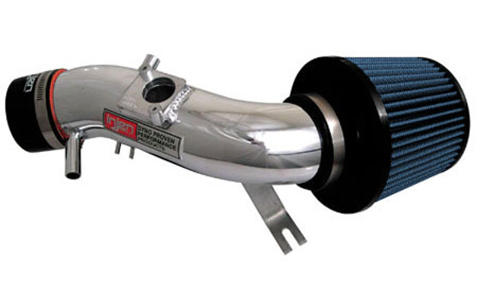
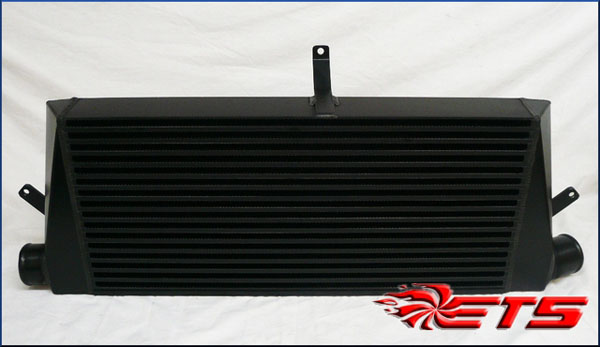
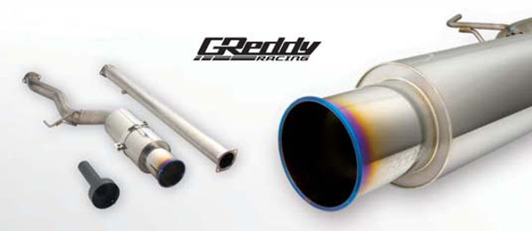
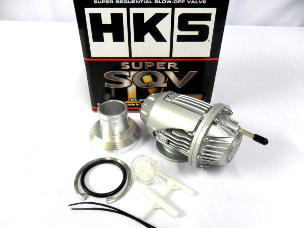

The Evo IX MR is a 2.0 Liter 4-cylinder Single Turbo Engine. It is all wheel drive and capable of driving in any terrian!
These Intake Systems Feature the Patent Pending MR Technology Process for Optimal Gains and a Safe A/F Ratio. The SP series does not limit itself to just a Cold Air System or Short Ram System. The MR Technology process has its effects on both types. SP is The World's First Tuned Intake System.
This system allows more efficient air flow from the turbo to the motor.
The Greddy Racing Titanium is a true race inspired exhaust system. Optimized to increase performance
HKS Super SQV (Sequential Blow Off Valve) uses a unique sequential valve structure and a differential pressure control system, which allows for a broad operating range from low boost to high boost. Its Pull-Type relief design ensures stable operation regardless of the amount of boost pressure.
